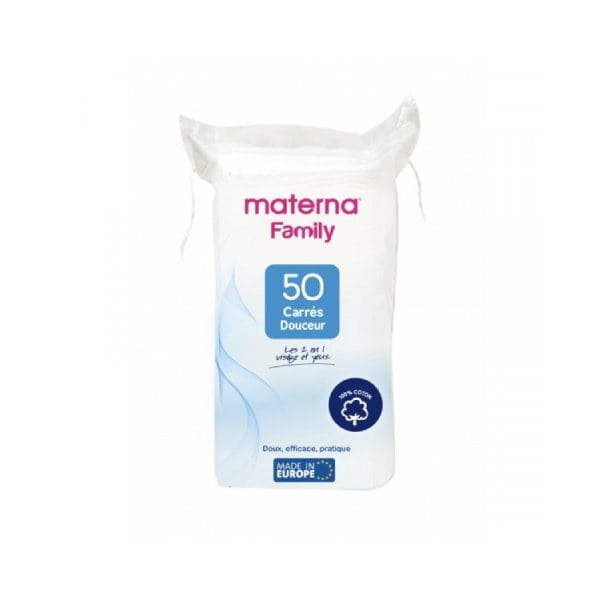

Materna 50 Coton Carrés Douceur

Description du produit
Les Materna 50 Carrés Douceur sont des carrés de coton conçus pour l'hygiène quotidienne et le soin de la peau.
Caractéristiques
- 100 % coton avec une double face douce et moelleuse.
- Sans parfum, sans alcool et sans substances irritantes.
- Texture : Résistante, non pelucheuse et absorbante.
Informations du produit
Catégorie : Bain et toilette
Prix : 4.804 DT
Quantité
Retourner au catalogue